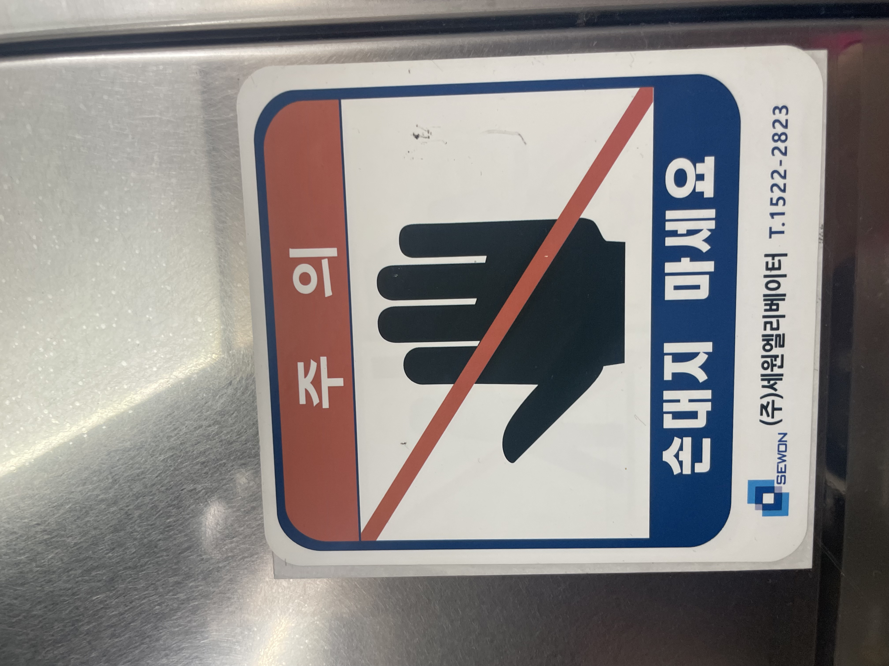
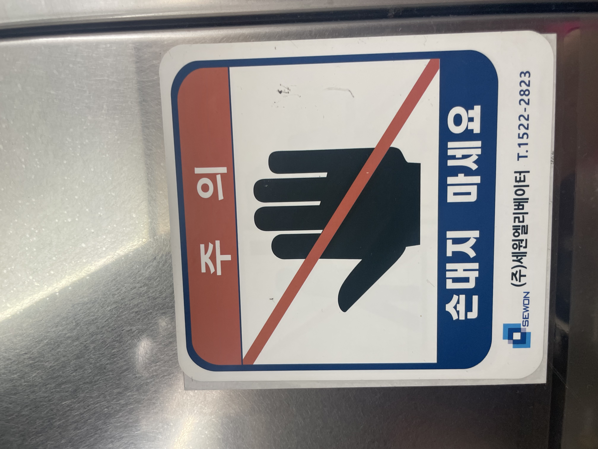

분홍색
분홍색은 주로 디저트 가게, 미용과 관련된 여성 고객을 목적으로 하는 가게들의 간판에서 찾을 수 있다. 1950년대 이후 분홍색이 여성성을 상징하는 색으로 자리 잡으면서, 이는 여성에 대한 고정관념을 강화하는 역할을 했다. 분홍색은 부드러움, 순수함, 사랑스러움 등의 특성을 상징하고, 이는 여성에게 기대되는 전통적인 역할이다. 어렸을 때부터 분홍색은 여자아이의 색으로 인식하고 자랐다. 여자아이가 파란색을 좋아한다고 했을 때, 친구들이 의아해 하던 기억이 어렴풋이 있다. 색은 그저 색일 뿐인데, 좋아하는 색도 사회가 정해 주는 것일까?
빨간색
빨간색은 여러 위험 요소들이나 눈에 잘 띄어야만 하는 물건들에게서 자주 보인다. 또 신호등의 빨간 불이나 화재 경보 등에서 빨간색은 주의와 경고의 의미를 나타낸다. 인간의 뇌는 빨간색에 대해 높은 경계를 가진다. 빨간색은 심장 박동을 증가시키고 호흡을 빠르기 한다. 사진을 찍으러 다니면서도 빨간색이 가장 눈에 잘 들어왔고 찾기도 쉬웠다. 빨간색이 경고의 의미가 있는 것은 많은 상황에서 긍정적으로 도움이 된다.
 

파란색
파란색은 대부분 안전하다는 표식이나 긍정적인 요소들에게서 자주 보인다. 첫 번째 사진에도 보이듯이 빨간색은 담배를 금지 시키는 역할을 하고 파란색은 안전한 금연 시설을 보여주는 역할을 한다. 파란색은 심리적으로 평온함과 안정감을 준다고 한다. 병원에서 쓰는 의료기기나 의사, 간호사의 옷도 파란색인 경우가 많다. 평소에도 긍정적인 공익광고나 가족과 관련된 광고에서 파란색을 많이 접했던 경험이 있다.